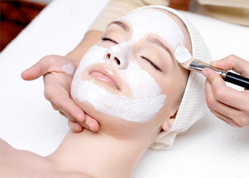

Uma página sobre estética pode abordar diversos tópicos relacionados a beleza, cuidados com a pele,maquiagem,cabelo,tendências de moda, entre outros assuntos relacionados á aparência e bem-estar.
A profissão de técnico em Estética está relacionada à promoção da beleza, saúde e bem-estar. Os técnicos em Estética podem realizar diversos procedimentos, como limpeza de pele, massagens, depilação, maquiagem, drenagem linfática, entre outros. Existe 5 tipos de estética: 1 - Estética facial. ... 2 - Estética corporal e massagem. ... 3 - Terapia capilar. ... 4 - Consultoria estética. ... 5 - Estética pré e pós-cirúrgica.
